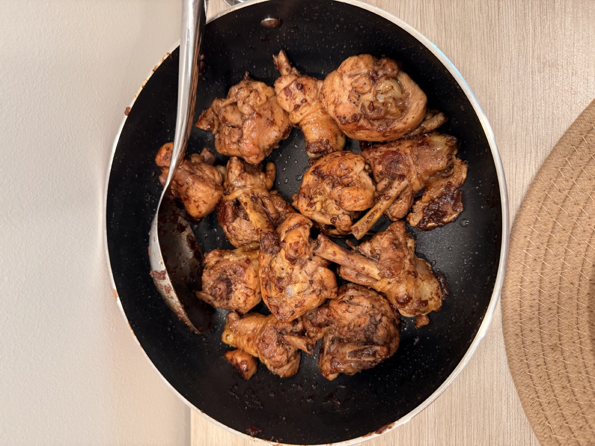
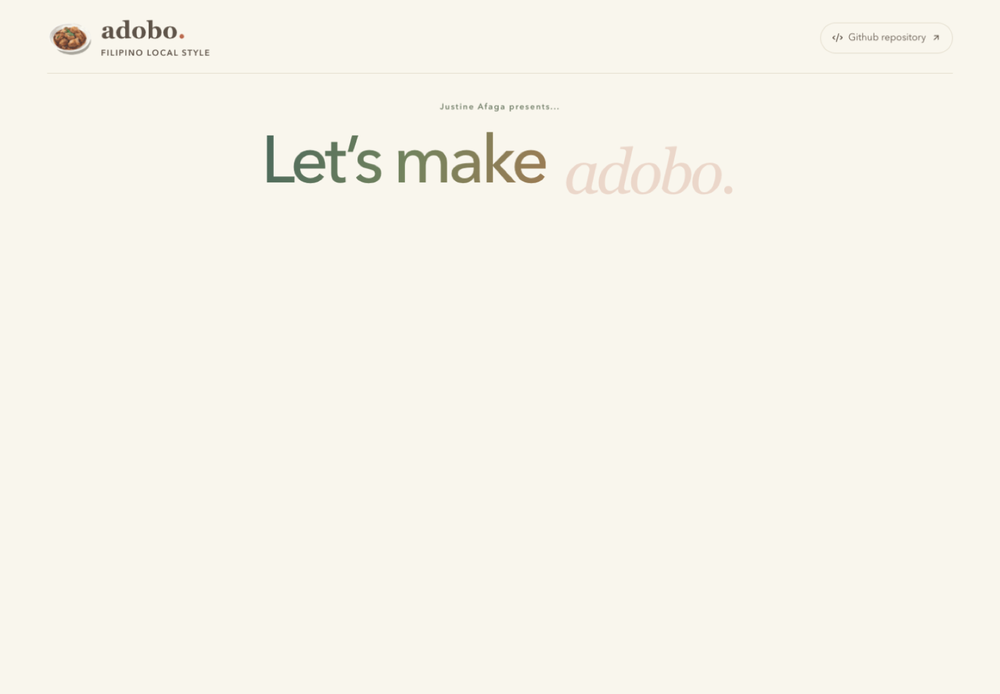

Keep the personal details
Each step includes the small comments and habits that make the recipe feel like mine instead of a generic set of instructions.
PROJECT 10 INTERACTIVE COOKING JOURNAL LIVE
A personal recipe experience that brings together two things I love: making chicken adobo and building with code.

This did not begin as an assignment or a deadline. I wanted to document the way I make chicken adobo and turn a familiar family recipe into something people could explore at their own pace. It became a chance to connect my Filipino-American identity, life in Hawaiʻi, and interest in thoughtful interface design.
Each step includes the small comments and habits that make the recipe feel like mine instead of a generic set of instructions.
Directions, ingredients, cooking cues, timing, and safety notes appear together when a timeline moment is opened.
The animated timeline tracks progress and gives each cooking stage its own visual moment on desktop, tablet, and mobile.
The visual direction is softer and more personal than my usual developer-terminal work. Warm cream, muted greens, serif type, food photography, and slow motion give the story room to breathe.

The landing view introduces the journal before the reader enters the cooking timeline.
This is my actual chicken adobo and the final image in the experience.
Each step stores its title, timing, instructions, ingredients, visual cue, personal note, and optional safety source in one typed data model.
Previous and next controls, completion tracking, expanded step views, and focus restoration help visitors move through the recipe without getting lost.
The Web Animations API creates the timeline transitions while reduced-motion support keeps the experience comfortable and accessible.
Automated checks cover recipe consistency, media references, photo attribution, and the geometry used by the timeline zoom.
This project reminded me that software does not have to feel separate from culture or everyday life. The technical choices mattered, but they mattered because they helped me tell a story that is personal to me.
The finished-dish photograph is my own. The project keeps photo credits in the repository and links its food-safety guidance to USDA resources.
Read photo credits ↗